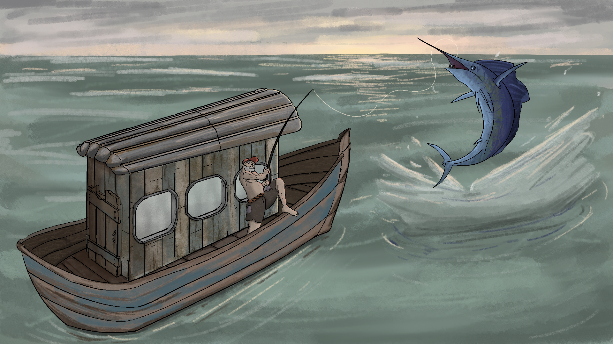
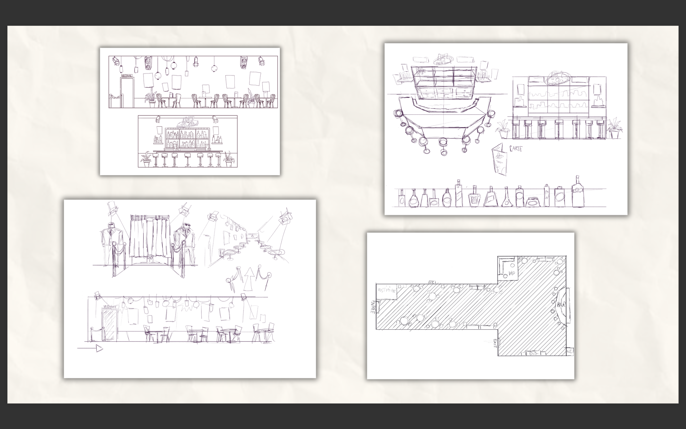
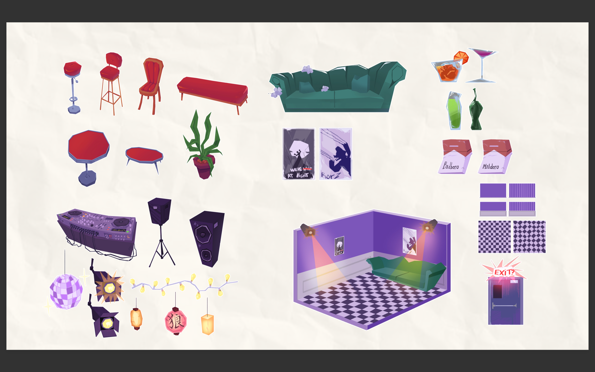
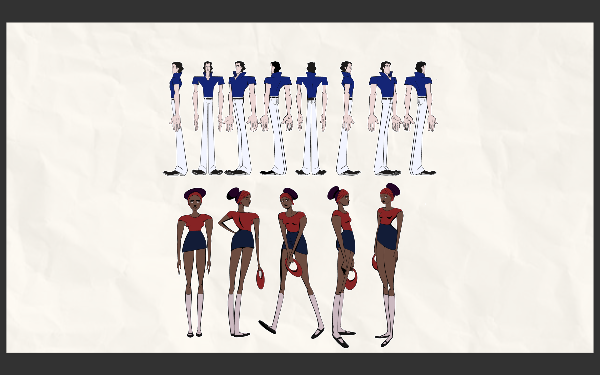
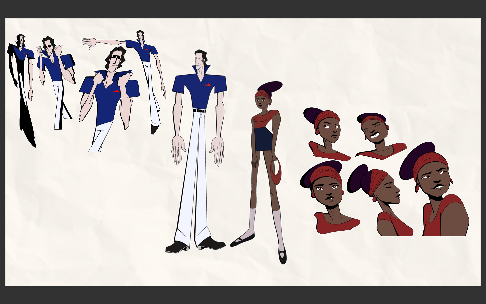
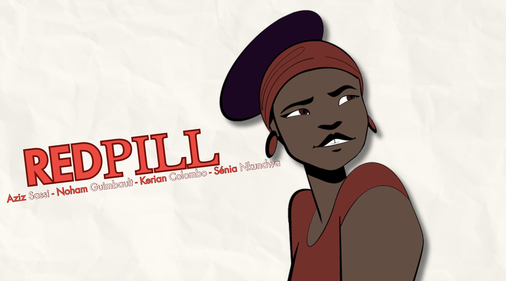

Prenez rendez-vous avec l'Art
📞 01.45.62.34.56
✉️ dedal_des_couleurs@gmail.com
📍 10 rue de la république 75000 Paris
Rejoignez nous et suivez l'Art
 dedal_des_couleurs
dedal_des_couleurs

Un jeune artiste en pleine création
Noham Guimbault est étudiant à l'ECV, l'École de Création Visuelle, où il se forme à l'animation (en 2D / 3D, à préciser).
Jeune artiste, il imagine, crée et anime ses propres idées. Pour lui, un dessin n'est jamais fini tant qu'il n'a pas bougé.
Ses personnages, aux couleurs vives et aux traits expressifs, donnent vie à des sujets qui l'inspirent et le touchent. Nourri par le cinéma d'animation, il raconte des histoires simples qui touchent par leur sincérité.

Son univers
Ce qu'il raconte : (thèmes, par exemple la sincérité, les émotions, les relations humaines).
Son style : des couleurs vives, des traits expressifs, des personnages qui portent l'émotion.
Ses influences : (films, studios ou réalisateurs qui l'ont marqué).
Ses outils : (logiciels utilisés, par exemple Procreate, Toon Boom, Blender, After Effects).



Du dessin au mouvement
Derrière chaque séquence, il y a des dizaines d'étapes. Noham vous les montre :
Les planches de recherche : les premiers traits, les essais de personnages.
Les images clés : les moments forts qui structurent l'histoire.
Les projets en cours : des œuvres en mouvement, qui évoluent encore.

Projet à la une : Red Pill
Red Pill est un projet collaboratif réalisé avec (noms des collaborateurs).
Noham y a (son rôle : réalisation, character design, animation...). À travers cette œuvre, il cherche à transmettre un message : (le message, en une phrase).
Fiche de l'œuvre
Titre : Red Pill
Année : (année)
Technique : (2D, 3D, stop-motion...)
Format : (durée ou format de l'image)
Statut : (en cours / terminé)
Noham expose pour la première fois à Dedal des Couleurs. Pour acquérir une œuvre, découvrir un projet ou imaginer une collaboration, contactez la galerie.
📞 01.45.62.34.56
✉️ dedal_des_couleurs@gmail.com
📍 10 rue de la république 75000 Paris
dedal_des_couleurs